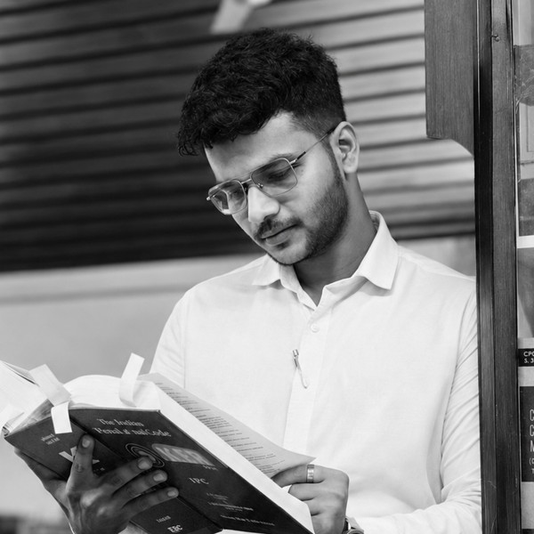

Team
Advocates
-
01.

Dr. K. P. Kylasanatha Pillay
Founder · Senior Advocate, Supreme Court of India
LL.M., Ph.D. (Law), M.A. (English), M.A. (History) · Enrolled February 1987 · Designated Senior Advocate 2009 · Mediator accredited by the MCPC · Former Independent Director, NTPC Limited · Email: dr.kppillay@gmail.com · Mobile: +91 98710 17940
Read full profile -
02.
Adv. Sreedevi Kylasanath
Advocate, High Court of Kerala
B.Com., LL.B., Diploma in Administrative Law, Kerala Law Academy Law College, Thiruvananthapuram · Enrolment No. K/232/1992 · Mediator accredited by the MCPC · Mobile: +91 98951 71648 · Email: sreedevikylasanath@gmail.com
Sreedevi Kylasanath was enrolled as an Advocate in 1992 and began her practice at the High Court of Kerala. She holds a B.Com., an LL.B. and a Diploma in Administrative Law from Kerala Law Academy Law College, Thiruvananthapuram.
Her principal areas of practice are constitutional law, administrative law and service law, and she appears before the High Court of Kerala, the Central Administrative Tribunal and the Kerala Administrative Tribunal. She is a mediator accredited by the Mediation and Conciliation Project Committee (MCPC) of the Supreme Court of India.
She is a life member of the Kerala High Court Advocates' Association and of the Bar Associations of the Kerala Administrative Tribunal and the Central Administrative Tribunal.
-
03.
Adv. Achuth Kylas, LL.M.
Advocate, High Court of Kerala
LL.M., King's College London · LL.B. (Hons.), School of Legal Studies, CUSAT · Enrolment No. K/904/2011 · Mobile: +91 98952 97201 · Email: adv.achuthkylas@gmail.com | kylasachuth@gmail.com
Achuth Kylas is an Advocate of the High Court of Kerala and has been in practice since July 2011. He holds a Master of Laws from King's College London, where his dissertation, "Counter-Terrorism: The Grey Shade of Law", examined the limits of anti-terror legislation, and an LL.B. (Hons.) from the School of Legal Studies, Cochin University of Science and Technology. He also holds a Diploma in Cyber Law and a Certificate in E-Commerce Law from the Asian School of Cyber Laws. He did his schooling at Chinmaya Vidyalaya, Vaduthala.
His practice centres on constitutional and public law, including writ petitions and public interest litigation, alongside criminal law, civil and property disputes, family and matrimonial law, Kerala service and education matters (including those under the Kerala Education Rules), and consumer and cyber law. He has represented municipal corporations, panchayats and banks before the Kerala Administrative Tribunal and the High Court of Kerala.
The High Court of Kerala has appointed him Amicus Curiae in W.P.(C) No. 20111 of 2015, and Advocate Commissioner in several matters, including those concerning the Sree Poornathrayeesa Temple, Thripunithura, and the Kaliyattakkavu Ammancheri Bhagavathy Devaswom, Malappuram. In 2022 he served on the Ethics Committee of Oushadhi – The Pharmaceuticals Corporation (IM) Kerala Limited. He is a mediator trained under the Mediation and Conciliation Project Committee (MCPC) of the Supreme Court of India.
He began his practice under the guidance of Adv. Prakash P. George before the District and subordinate courts in Ernakulam, having earlier interned under Senior Advocate Jacob Varghese at the High Court of Kerala. He is fluent in English, Malayalam and Hindi.
-
04.
Adv. Kamalakshy Kylasanath, LL.M.
Associate
B.A. LL.B., Kerala Law Academy Law College, Thiruvananthapuram · LL.M. (Public Law and Intellectual Property Rights), Department of Law, University of Kerala · Ph.D. research (ongoing), School of Legal Studies, CUSAT · Mobile: +91 95261 73558 · Email: k.kpillai9221@gmail.com
Kamalakshy Kylasanath is an Associate at Kylas Associates. She holds an LL.M. in Public Law and Intellectual Property Rights from the Department of Law, University of Kerala, Kariavattom, and a B.A. LL.B. from the Kerala Law Academy Law College, Thiruvananthapuram. Since 2019 she has been pursuing doctoral research, part-time, at the School of Legal Studies, Cochin University of Science and Technology.
Her work centres on contract drafting and review, with a particular focus on government contracts, alongside civil litigation, public and constitutional law, and intellectual property rights. Before joining the firm in 2025, she was a Legal Associate with Legalease Solutions LLC from 2023 to 2025. She began her career in 2016 at PNR Associates, where she handled civil litigation, including the drafting of plaints and written statements, and drafted and reviewed contracts.
From 2017 to 2019 she was an Assistant Professor at the Bangalore Institute of Legal Studies, where she taught commercial law subjects including intellectual property rights and the law of contracts, and organised national moot court and trial advocacy competitions and national seminars. Her research interests lie in government contracts, constitutional law and commercial law. She is a member of CG3 (Connecting Governed, Governing, Governance).
-
05.
Adv. Joselal George
Advocate, High Court of Kerala
B.B.A., LL.B. (Hons.) · Enrolment No. K/821/2015 · Mobile: +91 97479 49423 · Email: jlal.george@gmail.com
Joselal George is an Advocate practising in litigation and advisory work before the High Court of Kerala and the District and Sessions Courts of Kannur with Kylas Associates. He was enrolled in 2015 and trained under Senior Advocate Dr. K. P. Kylasanatha Pillay. His practice covers constitutional law, criminal law, civil and property litigation, family law and consumer disputes.
Languages: English, Malayalam, Tamil and Hindi.
-
06.

Adv. Sachin P.K.
Advocate
B.A. LL.B. · High Court of Kerala · Enrolment No. K/805/2023 · Phone: +91 98861 78561 · Email: sachinpk98@gmail.com
Sachin P.K. is an Advocate practising before the High Court of Kerala and the Central Administrative Tribunal with Kylas Associates, Kochi. He was enrolled in 2023 and trained under Senior Advocate Dr. K. P. Kylasanatha Pillay. His practice covers constitutional, criminal, civil and property, service, family, consumer and cyber law, with an emphasis on careful research and precise drafting. Languages: English, Malayalam, Tamil, Kannada and Hindi.
-
07.
Adv. Jaison Scaria
Advocate
B.B.A. LL.B. (Hons.), School of Legal Studies, Cochin University of Science and Technology (CUSAT) · Enrolled with the Bar Council of Kerala, Enrolment No. K/3144/2026 · [Areas of practice] · Phone: 9539980933 · Email: advjaisonscaria@gmail.com
-
08.

Adv. Varghese Xavier
Advocate, High Court of Kerala
B.Com., Rajagiri College of Social Sciences · LL.B., Government Law College, Kozhikode · Enrolment No. K/642/2023 · Phone: +91 90487 04627 · Email: varghesexavier1996@gmail.com
Varghese Xavier is an Advocate with Kylas Associates, Kochi, practising before the High Court of Kerala, the Central Administrative Tribunal, the District Courts and other judicial and quasi-judicial forums. He holds a Bachelor of Commerce from Rajagiri College of Social Sciences and a Bachelor of Laws from Government Law College, Kozhikode, and was enrolled with the Bar Council of Kerala in 2023.
He trained under Senior Advocate Dr. K. P. Kylasanatha Pillay and, before commencing practice, interned with Kylas Associates, gaining practical exposure to litigation, legal research and drafting. He has also assisted in proceedings before the Supreme Court of India.
His practice covers constitutional, criminal, civil, property, service, family, consumer and cyber law. He places particular emphasis on understanding clients' concerns and giving clear, practical guidance, supported by careful research and drafting.
He is a member of CG3 (Connecting Governed, Governing, Governance). Languages: English, Malayalam, Tamil and Hindi.
-
09.

Adv. Ananthu R.S., LL.M.
Advocate, High Court of Kerala
B.Com. LL.B., Kerala Law Academy, University of Kerala · LL.M. (Administrative Law and Environmental Law), School of Legal Studies, CUSAT · Enrolment No. K/270/2023 · Mobile: +91 79073 00938 · Email: advarnair15@gmail.com
Adv. Ananthu R.S. is an Advocate practising before the High Court of Kerala and the District Courts across the State. He holds a Master of Laws in Administrative Law and Environmental Law from the School of Legal Studies, Cochin University of Science and Technology, where his dissertation, "Administrative Discretion Exercised by the Local Self Government Authorities: An Analysis", examined the scope and limits of discretionary power in local governance. He also holds a B.Com. LL.B. from Kerala Law Academy, University of Kerala.
His practice covers civil and criminal litigation, including property disputes and matters before the Tribunal for Local Self Government Institutions, alongside family law and consumer disputes before the District, State and National Consumer Disputes Redressal Commissions. He also handles writ proceedings, with a particular focus on service matters before the High Court of Kerala, the Kerala Administrative Tribunal and the Central Administrative Tribunal.
The Kerala State Consumer Disputes Redressal Commission has appointed him Amicus Curiae in Appeal No. 469 of 2015 and Appeal No. 92 of 2013, and he has been appointed Advocate Commissioner by various courts in several matters. He is a Member of CG3 (Connecting Governed, Governing, Governance).
He began his practice under the mentorship of Dr. K. P. Kylasanatha Pillay and Adv. Sreedevi Kylasanath before the Supreme Court of India and the High Court of Kerala, and under the guidance of Adv. Jayachandran R. before the District Court and other mofussil courts in Thiruvananthapuram. He is fluent in Malayalam, English and Tamil, and has a working knowledge of Hindi.
-
10.

Adv. Praveen S., B.Com., LL.B.
Advocate · Tax Attorney
B.Com., LL.B. · Enrolment No. K/35/2004 · Mobile: +91 98471 57109 · Email: praveenassociates594@gmail.com
Praveen S. is an Advocate enrolled with the Bar Council of Kerala in 2004 and a tax attorney with Kylas Associates. He holds a Bachelor of Commerce and a Bachelor of Laws, a combination that informs his practice at the meeting point of accounts and law.
His practice is devoted to taxation, covering Goods and Services Tax (GST) and income tax. He handles the filing of GST and income tax returns, assists clients through GST and income tax audits, and advises on tax compliance generally. He represents clients before the GST and income tax authorities, and before the tribunals and forums that hear tax matters.
-
11.

Adv. Sathi R.
Advocate
LL.B., Kerala Law Academy · Enrolment No. K/631/1995 · Mediator accredited by the MCPC · Former Member, District Consumer Disputes Redressal Commission, Thiruvananthapuram · Mobile: +91 94479 57760
Sathi R. was enrolled as an advocate on 26 January 1995 and practises before the courts at the District Court Centre, Thiruvananthapuram. She served as a panel advocate for a bank for ten years and is a former Member of the District Consumer Disputes Redressal Commission, Thiruvananthapuram.
She is a mediator accredited by the Mediation and Conciliation Project Committee (MCPC) of the Supreme Court of India, and is empanelled as a mediator at the District Court Centre, Thiruvananthapuram.
Office Staff
-

Sabu C.G.
Clerk
Phone: 9446544726 · Email: sabugeorgecc@gmail.com